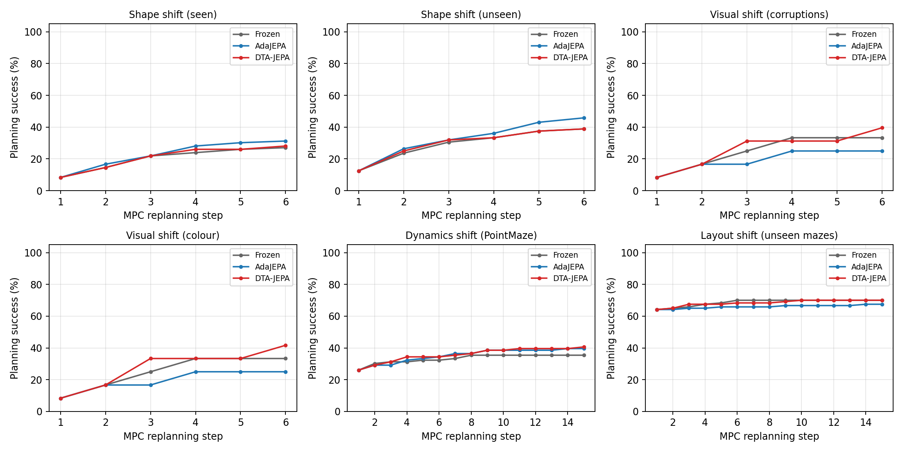
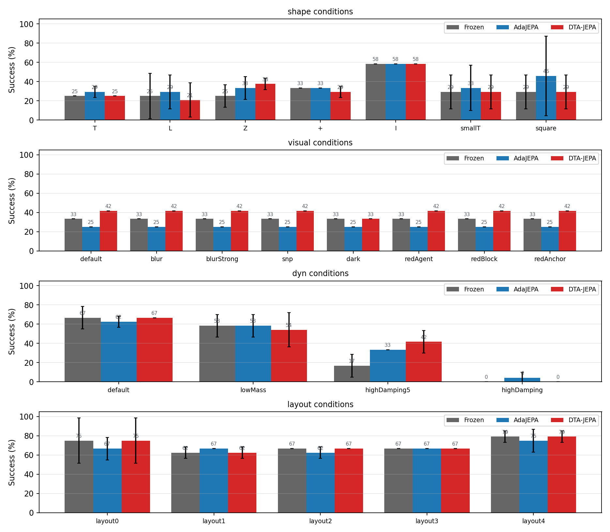

Uncertainty-allocated test-time adaptation with persistent memory and a safety layer · Hefei Jiuzhai Big Data Technology Co., Ltd.
A latent world model plans by rolling out a learned predictor, and that predictor is almost always frozen after training — so under test-time shift, MPC optimises the wrong objective. AdaJEPA fixed the symptom with one gradient step per replan. DTA-JEPA fixes the unit of adaptation instead: a slow S-module produces a dynamics context and is never touched online, a fast R-module recursively refines the next latent with deep supervision at every refinement depth, and a single surprise signal decides how many gradient steps, how much learning rate, how deep to refine, how conservative to plan, what to remember and when to roll back.
Slow context + fast recursion. Adaptation lives in a rank-4 LoRA set (0.6M of 1.29M parameters) on the fast module and the encoder head; the pretrained trunk is an immutable anchor.
Mahalanobis surprise under the model's
own Gaussian allocates steps U∈[1,3], learning rate [0.2,5]× and
refinement depth K∈[1,4]. In distribution it is as cheap as AdaJEPA; out of
distribution it spends where the model is measurably wrong.
A priority queue of high-surprise latent transitions that persists across episodes, plus a skill bank of fast-parameter snapshots indexed by environment fingerprint, consolidated at episode boundaries under EWC.
Anchor ball projection, validation-gated rollback, immutable slow anchor, and a Mahalanobis support penalty inside the planning cost.
Frozen vs a faithful AdaJEPA re-implementation vs DTA-JEPA, identical planner, horizon, replay buffer, checkpoint and episode set. Success in percent, averaged over the conditions of each shift family.
| Dynamics | Layout | Shape | Visual | |
|---|---|---|---|---|
| AdaJEPA | 40.3 | 65.8 | 37.5 | 25.0 |
| DTA-JEPA | 38.9 | 68.3 | 32.7 | 40.6 |
| Frozen | 40.3 | 70.0 | 32.1 | 33.3 |


| seen | unseen | |
|---|---|---|
| AdaJEPA | 31.2 | 45.8 |
| DTA-JEPA | 28.1 | 38.9 |
| Frozen | 27.1 | 38.9 |
| dyn | shape | |
|---|---|---|
| DTA-JEPA + meta init | — | 32.1 |
| LoRA fast set (r=4) | 36.1 | 33.3 |
| fixed refinement depth | 36.1 | 29.8 |
| w/o cross-episode consolidation | 36.1 | 29.8 |
| w/o dual memory | 38.9 | 29.8 |
| w/o safety layer | 41.7 | 35.7 |
| w/o uncertainty allocation | 36.1 | 29.8 |
| Stream | mean squared error | mean predicted variance | Spearman ρ(var, err) | relative ECE |
|---|---|---|---|---|
| in distribution | 25.798 | 22.807 | +0.55 | 82% |
| unseen shape | 21.689 | 21.725 | +0.64 | 79% |
| blurred observations | 25.794 | 22.805 | +0.55 | 82% |
Mean squared latent error per refinement depth (depth 1 → 4):
Shift families, segment-based goal sampling (goals are future frames of the same held-out trajectory, 25 steps ahead), MPC budget (horizon 15, chunk 5, ≤10 replans), planner (GD with Adam, lr 0.1), adaptation rates (5e-4 / 1e-5) and success criteria follow AdaJEPA. The environments are a self-contained numpy re-implementation: impulse-based 2D contact physics and a software rasteriser, with no simulator, dataset or checkpoint download.
python -m dtajepa.data
python -m dtajepa.train --data push_four_shapes_train --name push4 --epochs 6
python -m dtajepa.meta --data push_four_shapes_train --base push4 --name push4_meta --iters 300
python -m dtajepa.evaluate --suite all --methods frozen adajepa dtajepa --n_ep 20 --max_replans 8 --opt_steps 25 --horizon 12 --threads 8
python -m dtajepa.reportThe benchmark is a physics-based 2D re-implementation with 64×64 observations and ~1.3M parameter world models trained on a few hundred trajectories per family. Absolute success rates are not comparable to PushT/PointMaze numbers in the literature; the method comparison is, because every method sees the identical planner, budget, checkpoint and episode set.